Префектура Фукуока · Дадзайфу · святилище и искусство
Святилище Дадзайфу Тэммангу: дом Митидзанэ Сугавара, бога учёности и искусств
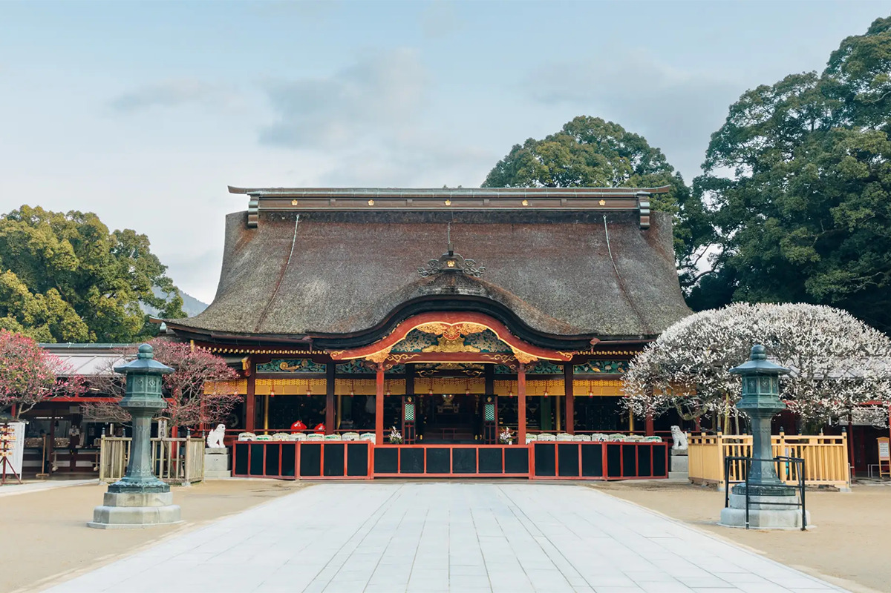
Каждый год в Дадзайфу приезжает около 10 миллионов человек: студенты просят удачи на экзаменах, остальные идут к сливам, старому залу и камфорным деревьям. Святилище Дадзайфу Тэммангу стоит над могилой Митидзанэ Сугавара, учёного и поэта IX века, и уже больше тысячи лет собирает вокруг него самое новое искусство своего времени.
История
Святилище над могилой изгнанника
Дадзайфу Тэммангу считается главным среди всех святилищ Тэммангу в Японии. Его особенность в том, что главный зал стоит прямо над могилой божества: здесь похоронен Митидзанэ Сугавара. Поэтому святилище называют «Кансэйбё», то есть священной гробницей Сугавара, и такое место во всей стране одно.
В 901 году Митидзанэ, оклеветанный придворными соперниками из рода Фудзивара, получил формальную должность в правительственной резиденции Дадзайфу. На деле это была ссылка. В бедности и одиночестве он, по преданию, продолжал молиться о благополучии императорского дома и мире в стране. 25 февраля 903 года Митидзанэ умер в южной резиденции правительства, там, где сегодня стоит святилище Эноки-ся. Ему было 59 лет.
По его воле тело похоронили в Дадзайфу. Когда похоронная процессия двигалась по дороге, вол, тянувший повозку, вдруг лёг и больше не встал. Люди решили, что такова воля самого Митидзанэ, похоронили его на этом месте и построили над могилой святилище. С этого и начался Дадзайфу Тэммангу.
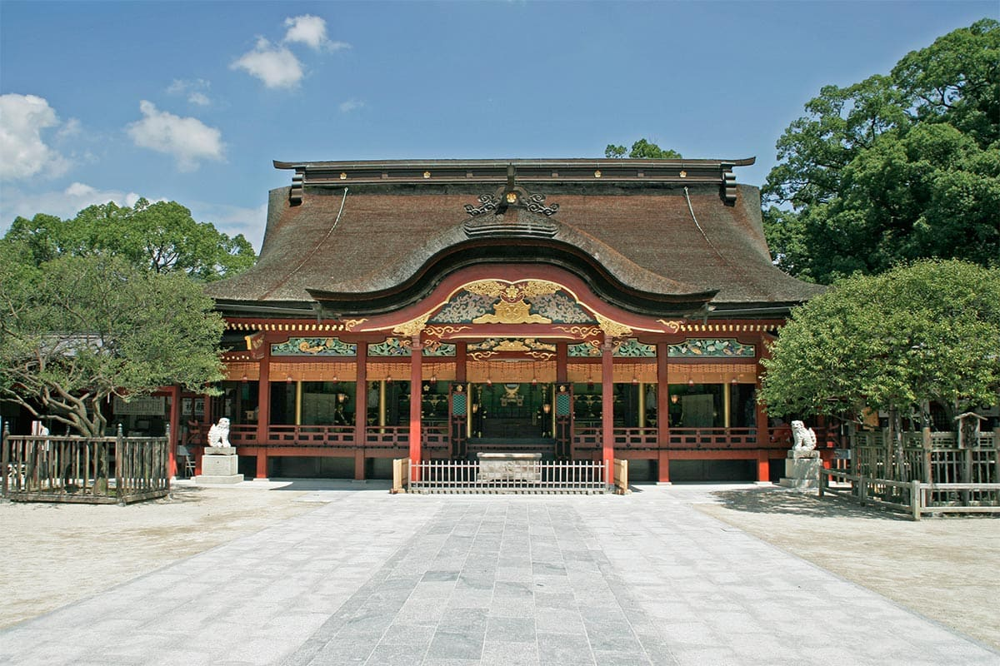
После его смерти страну одна за другой поражали беды, и в столице решили, что это гнев оскорблённого Митидзанэ. Его признали невиновным, посмертно дали ему божественный титул «Тэмман дайдзидзай тэндзин» и стали почитать как Тэндзина, «Тэндзин-сама». Поскольку Митидзанэ с детства любил книги, Тэндзин постепенно стал покровителем учёбы. А раз опальный министр в итоге вернул себе честь, Дадзайфу ещё называют местом возрождения: сюда приходят просить о том, чтобы снова встать на ноги.
С тех пор как смотрителем святилища назначили внука Митидзанэ, его ведут прямые потомки рода Сугавара. Сегодняшний настоятель принадлежит к сороковому поколению, если считать от самого Митидзанэ.
Главный зал, который видят паломники сегодня, построили в 1591 году на средства Такакагэ Кобаякавы (1533–1597), полководца и правителя провинции Тикудзэн, как тогда называлась эта часть Фукуоки. Тяжёлая крыша, позолота и яркая резьба выдают пышный стиль эпохи Адзути-Момояма, и зал охраняется государством как важный объект культурного наследия.
Число 25
Праздник раз в четверть века
По преданию, Митидзанэ родился 25 июня, а умер 25 февраля, поэтому число 25 считается его числом. Каждый месяц 25-го числа в святилище служат праздничную церемонию, а раз в 25 лет проходит большой праздник Сикинэн Тайсай. К нему восстанавливают старинные постройки и сокровища, приводят в порядок территорию и леса вокруг.
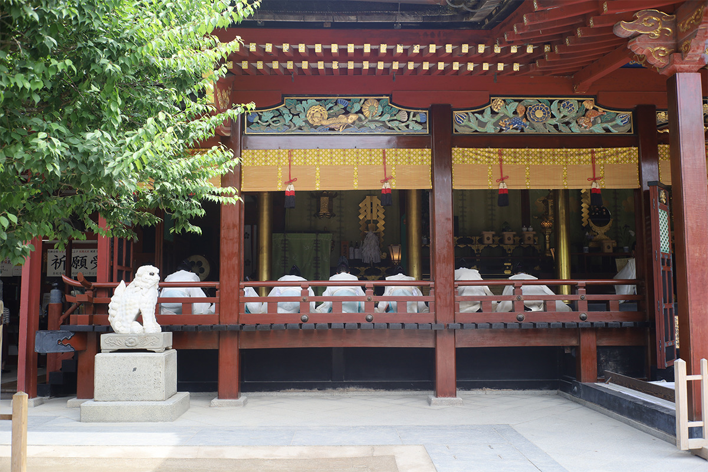
В 2027 году исполнится 1125 лет со дня смерти Митидзанэ, и к этому празднику главный зал впервые за 124 года закрыли на большую реставрацию. Работы начались в мае 2023 года и шли три года. В 2026 году реставрацию завершили, и главный зал снова открыт для паломников.
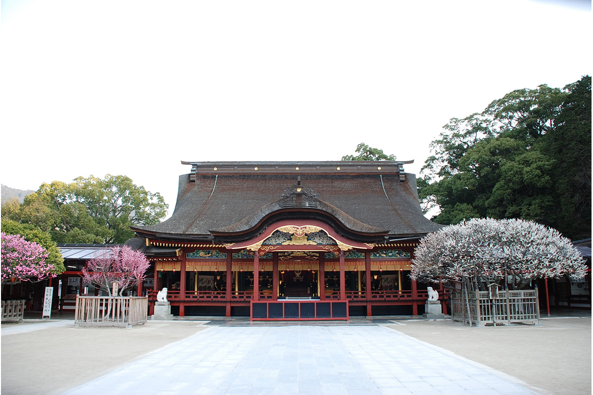
Бог искусств
Не только экзамены
Тэндзина знают прежде всего как бога учёбы, но Митидзанэ прекрасно писал стихи, и с давних пор его почитали ещё и как покровителя литературы и искусств. Уже в середине эпохи Хэйан учёный Масахира Оэ (952–1012) назвал его «великим предком пути словесности и хозяином ветра и луны», то есть родоначальником литературы и поэзии.
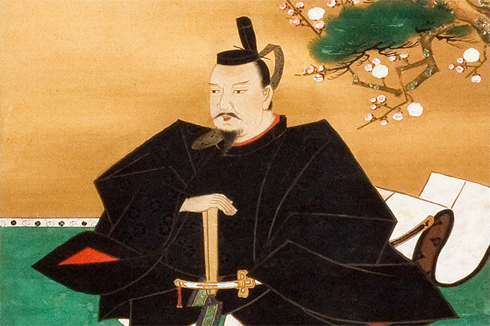
В эпоху Муромати дзэнские монахи Камакуры почитали Тэндзина как покровителя стихов-цепочек рэнга и чайной церемонии. Ему поклонялись Хидэёси Тоётоми (1537–1598) и многие князья, и святилища Тэндзина появились по всей стране. В эпоху Эдо ему молились в княжеских школах и в школах при храмах как богу учёбы и защитнику детей. Актёры театра дзёрури и кабуки видели в нём покровителя сцены, а те, кто учился письму, покровителя каллиграфии.
Люди, почитавшие Тэндзина, несли в святилище лучшее, что умела их эпоха: картины, стихи, предметы искусства. Их бережно хранили как сокровища, и многое сохранилось до наших дней.
В марте 1873 года святилище устроило «Выставку Дадзайфу» и показало публике больше 600 предметов, в том числе свои сокровища. Первая выставка в Японии прошла в Киото всего двумя годами раньше, в 1871 году, а открывать храмовые сокровища для всех тогда было почти не принято. Выставка имела успех и проходила три года подряд. Из неё выросла идея постоянного музея: в 1893 году святилище вместе с местными жителями подало префектуре Фукуока прошение о «музее Тинсэй» и даже получило разрешение. Но началась японо-китайская война, и план заморозили. Только через 112 лет, в 2005 году, в Дадзайфу открылся Национальный музей Кюсю, о котором здесь мечтали больше века.
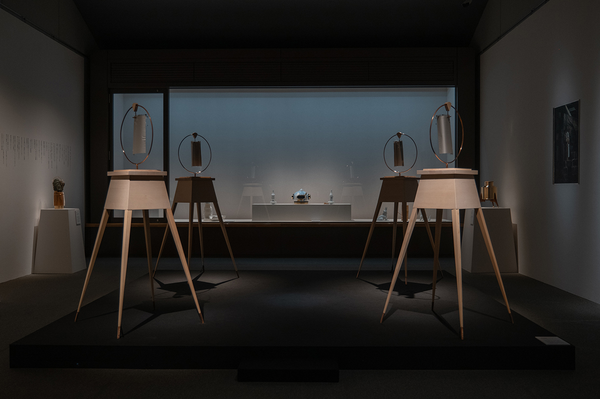
Эту тягу к новому легко понять, если вспомнить самого Митидзанэ. Он дослужился до правого министра и, судя по всему, одним из первых узнавал о событиях за пределами Японии. Для своего времени это был человек передовой. Неудивительно, что и его святилище всегда старалось идти на шаг впереди. С 2006 года здесь работает собственная программа современного искусства.
2023–2026
Павильон с лесом на крыше
Пока главный зал был закрыт на реставрацию, божество нужно было где-то разместить. Для этого перед главным залом построили временный павильон: он принимал паломников и служил местом церемоний с мая 2023 года до 2026 года. В мае 2026 года павильон завершил работу и был разобран.
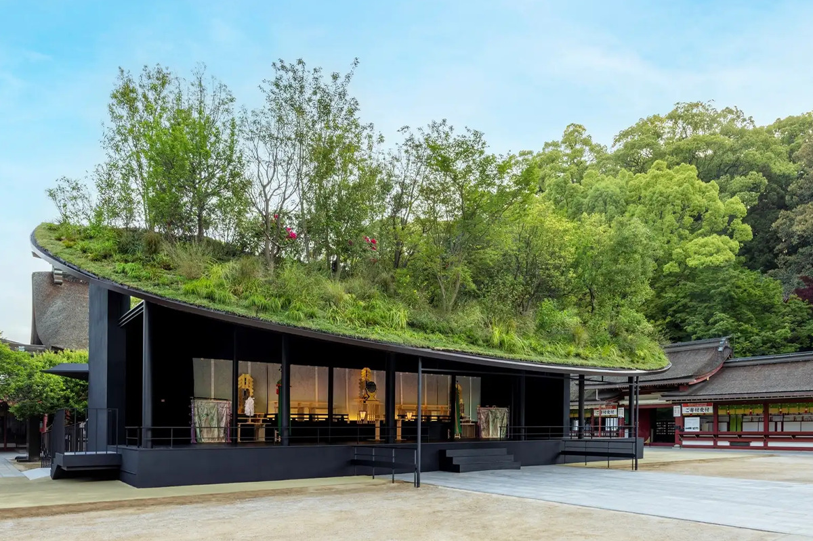
Святилище отнеслось к временной постройке всерьёз. Павильон проектировал архитектор Со Фудзимото, главный дизайнер площадки выставки «Экспо 2025» в Осаке. Занавесы внутри создала Майко Курогоути, дизайнер марки Mame Kurogouchi, которая показывает коллекции на Неделе моды в Париже. Обоим святилище поручило сделать то, что останется в его истории.
«Даже зная, что главный зал на реставрации, люди всё равно приезжают помолиться, и павильон это благодарность им. Пусть они не увидят сам зал, но память о паломничестве должна остаться хорошей. Главный зал стоит над могилой Митидзанэ, для нас это его дом. Павильон хоть и на три года, но в нём живёт божество. Поэтому мы хотели построить самый красивый павильон, какой только можно сегодня»
настоятель святилища
Фудзимото много раз приезжал в Дадзайфу и долго разговаривал с настоятелем. Сильнее всего его поразили камфорные деревья старше 1500 лет, густой лес вокруг святилища и огромная крыша главного зала. Отсюда родилась идея «летающего леса»: деревья «леса Тэндзина» будто перелетели на крышу павильона. Подсказкой стала и легенда о священной сливе Тобиумэ, которая за одну ночь прилетела из Киото в Дадзайфу.
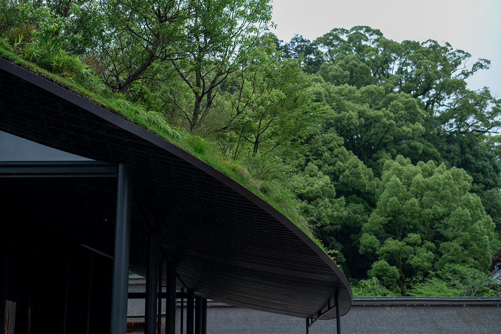
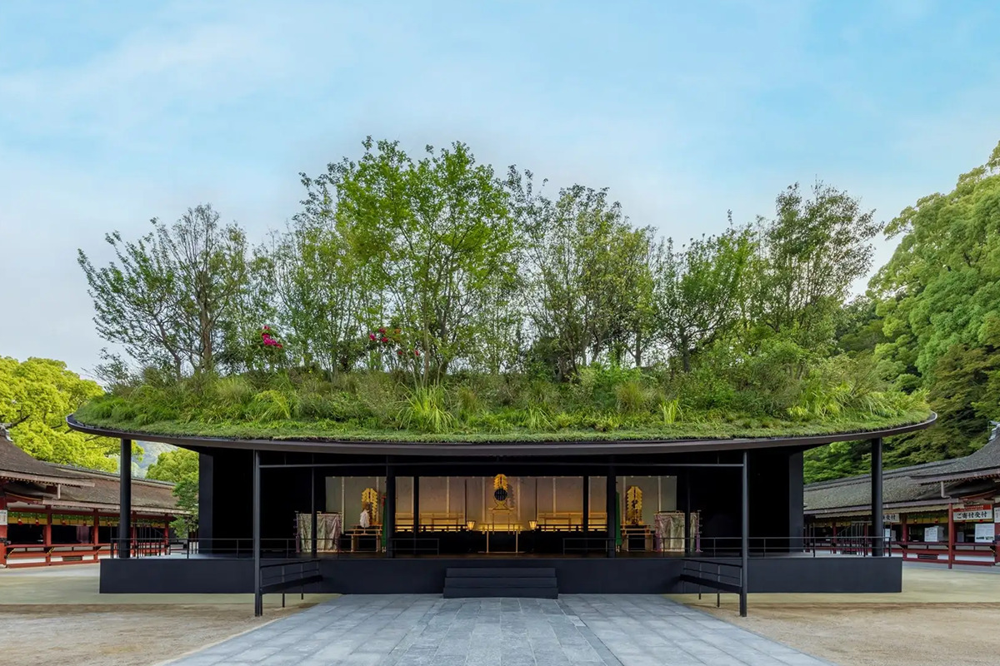
На крыше росли деревья, кусты и травы, и вместе с соседним лесом павильон менялся по сезонам и в зависимости от погоды. Свес крыши сделали глубоким по примеру главного зала. Тот, кто проходил под башенными воротами Ромон, сначала видел издалека зелень на крыше. Для деревьев нужен был толстый слой земли, поэтому потолок изнутри изогнули, а сам его собрали из реек, как жалюзи, вспомнив ровные ряды стропил главного зала.
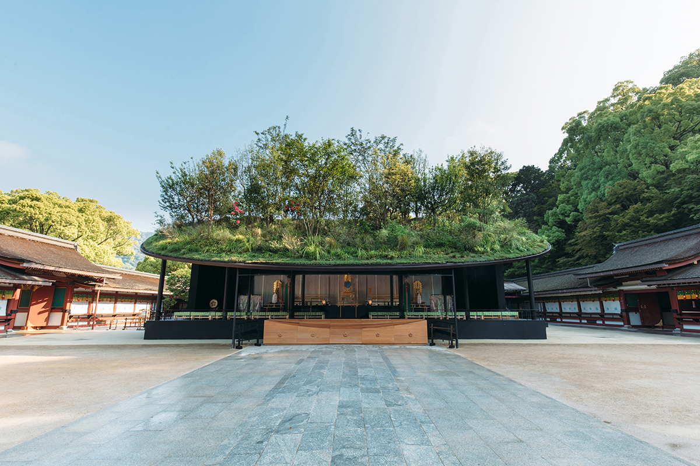
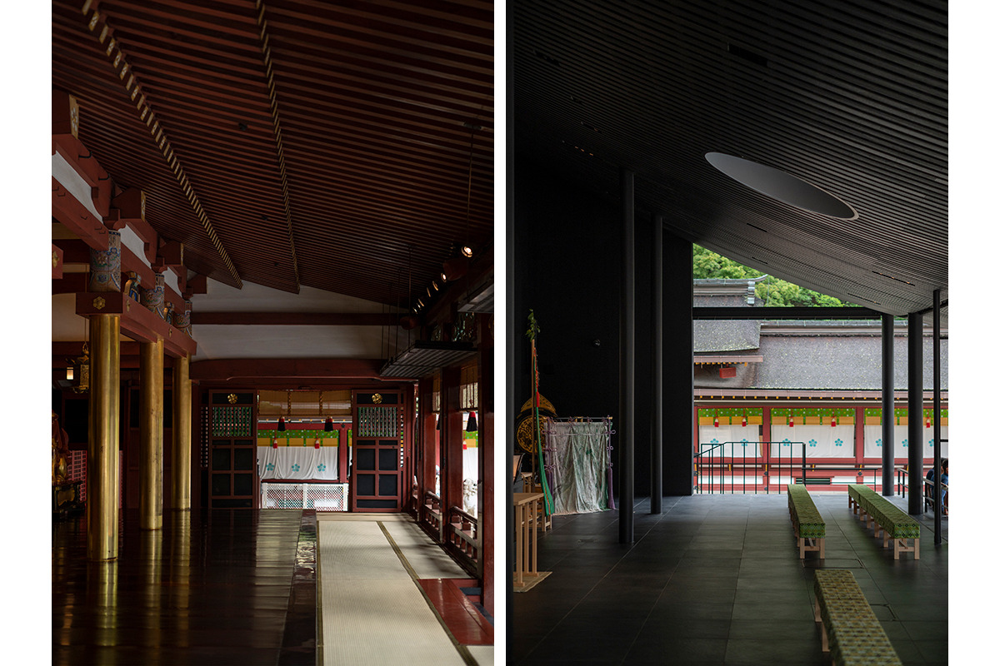
Внутри пол, колонны и потолок были чёрными. По словам Фудзимото, на свету чёрный цвет переливался мягким градиентом, и на этом фоне занавесы Курогоути словно парили в воздухе. В потолке было круглое окно: подняв голову во время молитвы, можно было увидеть деревья на крыше.
«У святилища больше тысячи лет истории, и я чувствовал огромную ответственность. Сейчас павильон это здание, где хранится дух божества и куда приходят паломники. А в будущем он станет частью истории, которую здесь берегут веками»
архитектор Со Фудзимото
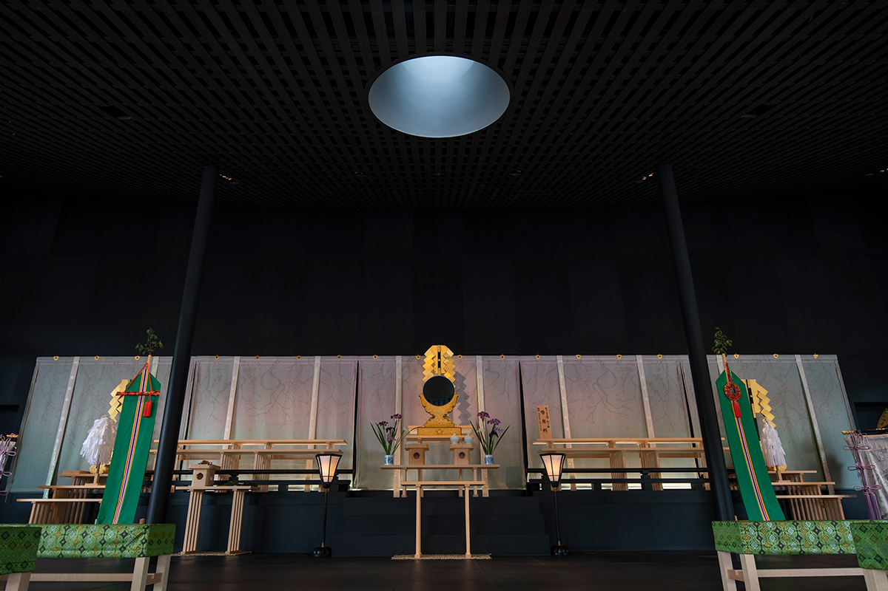
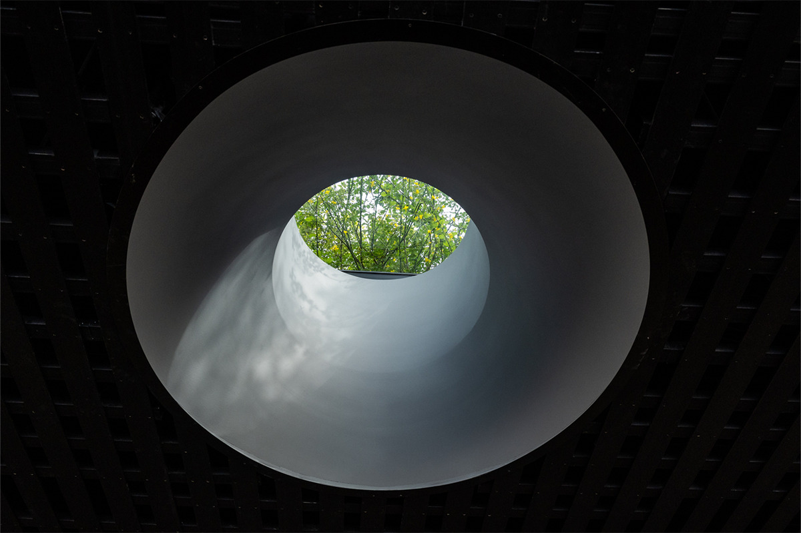
Занавесы, которые раньше невозможно было соткать
Курогоути приезжала в святилище задолго до этого заказа. Около восьми лет она ходила на выставки программы современного искусства и однажды участвовала в новогодних обрядах Усо-каэ и Онисубэ. Ей нравилось, как здесь уживаются старое и новое.
«Я узнала, что работы современных художников святилище хранит так же, как сокровища, которые передавались поколениями, и через сотни лет они тоже станут наследием. Поэтому я решила соткать ткань, какую можно сделать только в наше время: на современном станке, но с древним окрашиванием растениями»
дизайнер Майко Курогоути
Главный занавес митобари отделял пространство божества от людей. На нём Курогоути изобразила сливы, которые сама зарисовала в разных уголках святилища, начиная с Тобиумэ. Цвет и узор плавно менялись от центра к краям, как бы выходя наружу, к окружающему пейзажу. Обычно у таких занавесов есть подкладка, но здесь изнанку тоже расписали: по словам дизайнера, божество ведь смотрит с другой стороны, и его вид тоже важен.
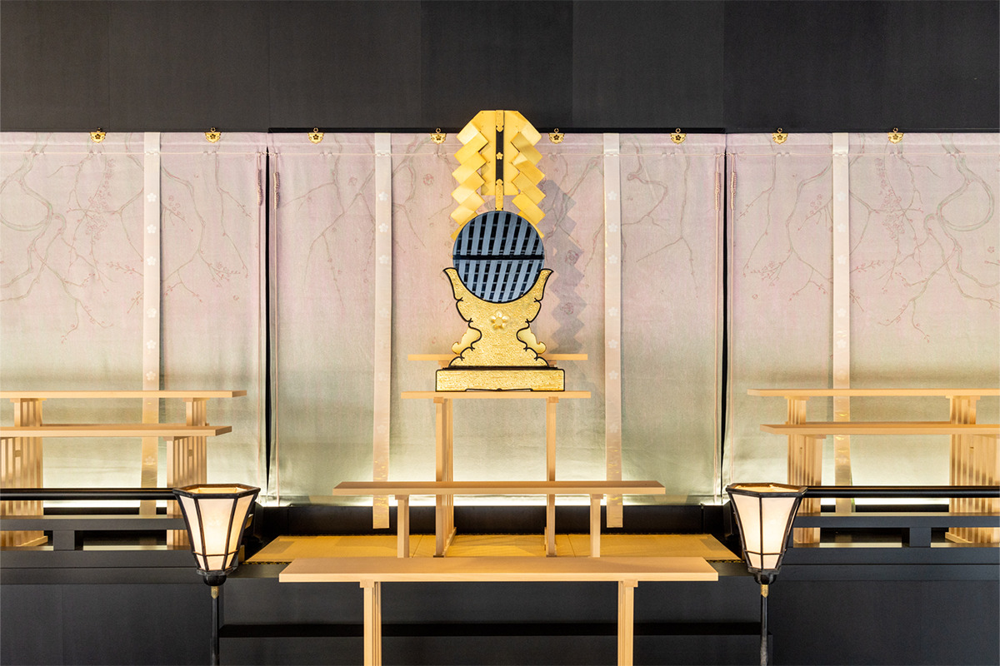
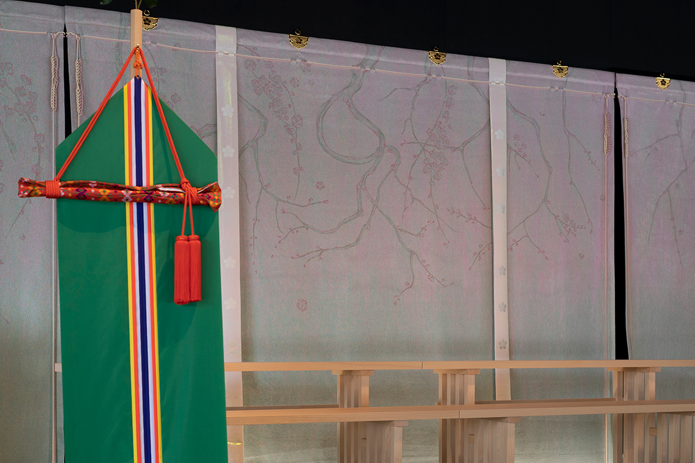
Переносные ширмы китё сделали из шёлка, конопли, переливающейся плёнки и купры, старые материалы рядом с новыми. Шёлк окрашивали отваром из веток сливы и камфорного дерева, срезанных при обрезке в святилище, а часть ткани покрасили редким фиолетовым корнем воробейника по древнему рецепту. Свободно брошенные длинные нити напоминали дождь, падающий на землю святилища: так Курогоути увидела «пейзаж жизни». В узор вошли ирисы, камфора, сливы и воспоминания семьи настоятелей.
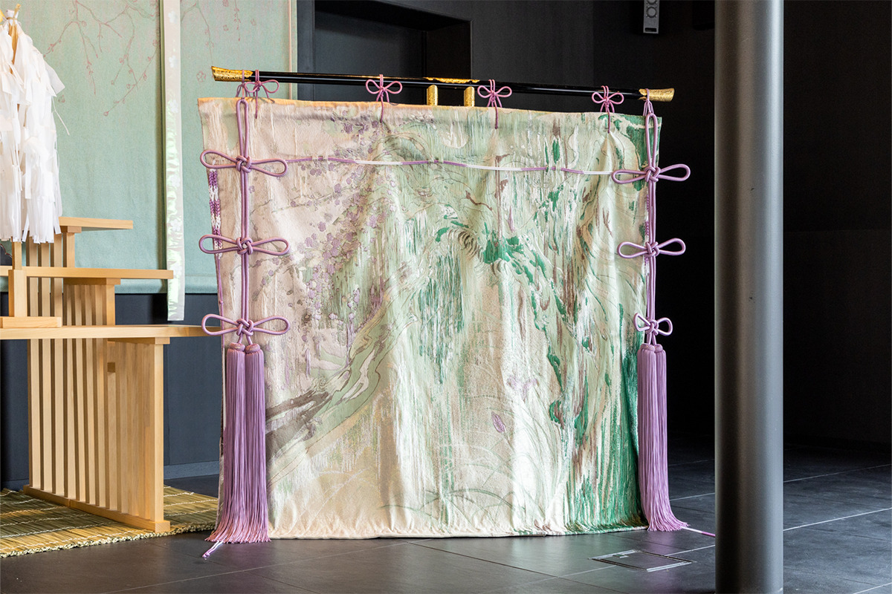
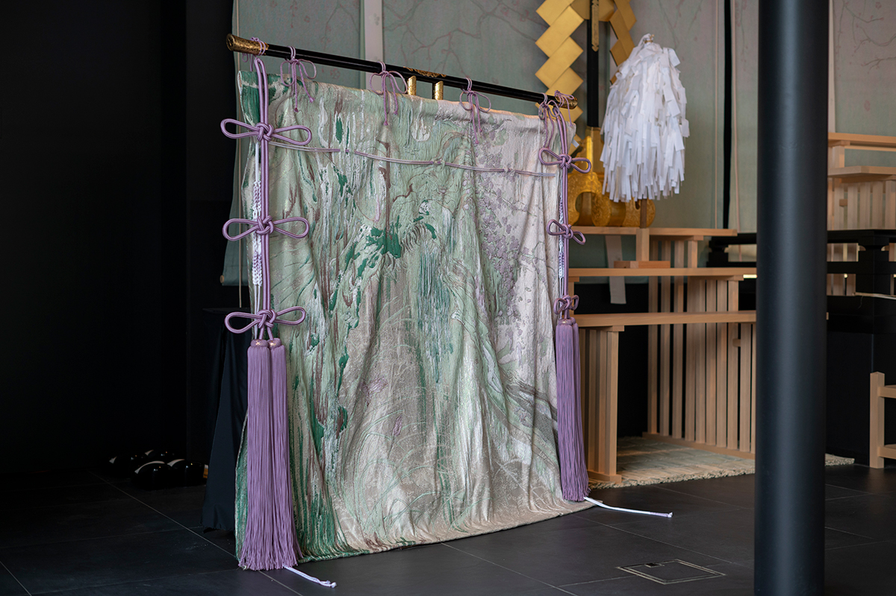
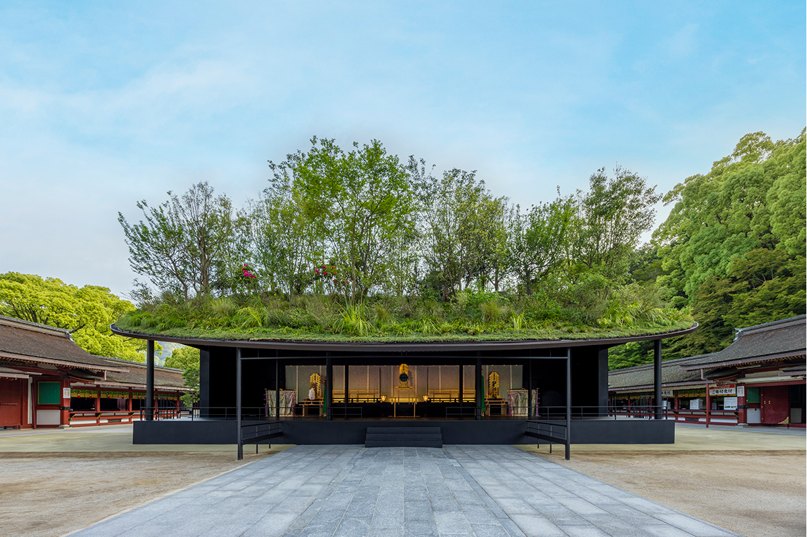
«Мне показалось, что само святилище как живое существо. И здесь постоянно пробуют новое, чтобы оставить сегодняшнюю культуру следующим поколениям. Мысль о том, что вещь, сделанная сегодня, через сто лет станет культурой, очень важна и для современной моды»
дизайнер Майко Курогоути
Оба автора, не сговариваясь, сказали почти одно и то же: у святилища больше 1100 лет истории, и три года павильона стали её маленькой частью. Традиция когда-то тоже была самым новым, что умела своя эпоха, поэтому она и осталась в памяти людей.
Искусство
Прогулка по территории
Современное искусство в Дадзайфу Тэммангу не прячут в музей: работы стоят прямо на территории, в лесу и у дорожек. Рядом с ними старые постройки, которые святилище тоже считает частью своей коллекции.
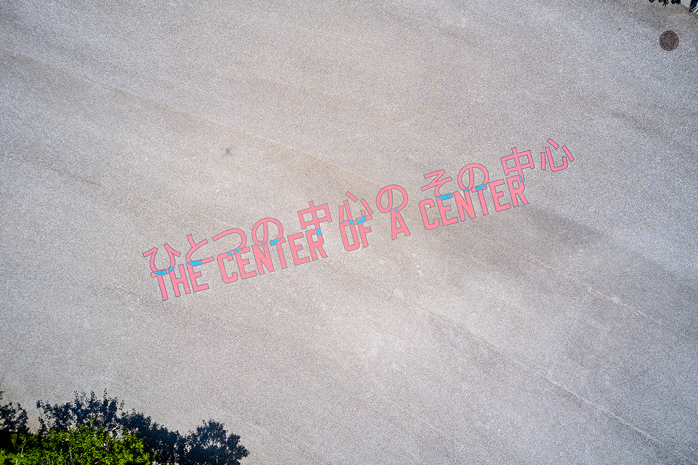
Зал Эма-до это самый большой и старый из сохранившихся на Кюсю залов для вотивных табличек эма. Здесь висят десятки табличек и картин, подаренных святилищу с эпохи Эдо до наших дней, и в каждой чьё-то желание. Среди авторов художник Гёкуран Окумура, составивший иллюстрированный путеводитель по провинции Тикудзэн, связанный с Дадзайфу художник Сюхо Сайто и современный тайваньский художник Майкл Лин.
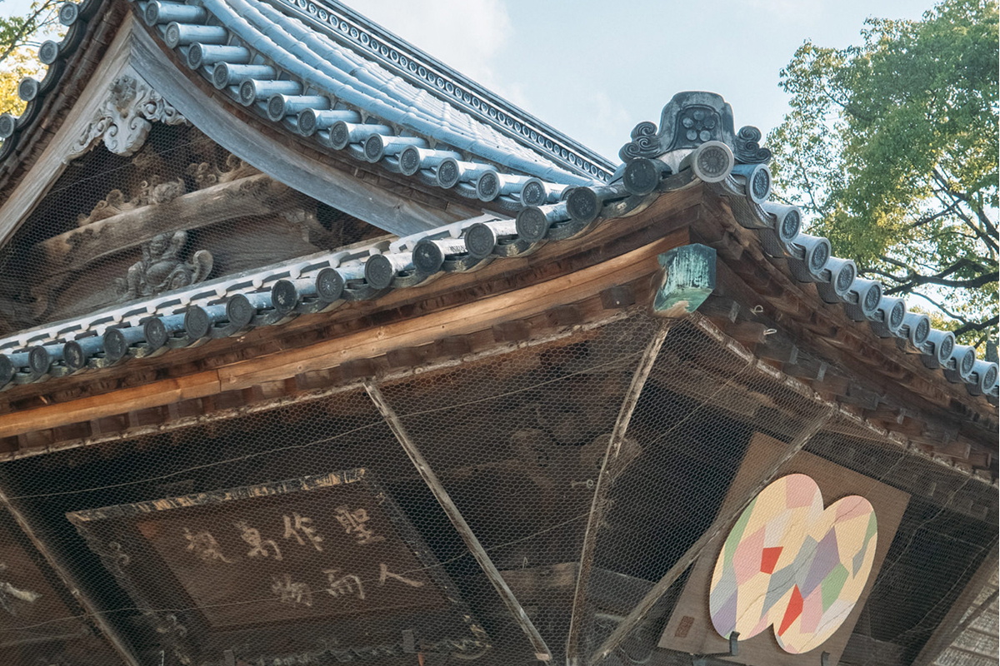
В глубине леса стоит «Эхо, Нарцисс (Дадзайфу)» художницы Мики Тадзимы, скульптура для медитации. Днём она запасает энергию солнца, а после заката тихо светится в темноте.
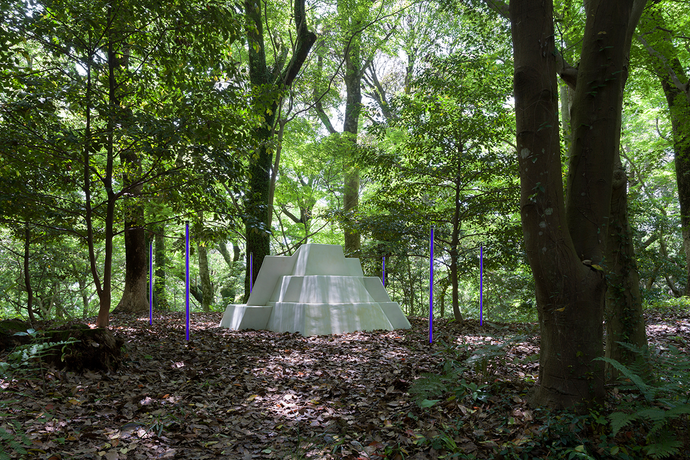
Сразу три работы на территории сделал британский художник Райан Гандер. Шар из металлических обрезков, будто притянутых магнитом, называется «Что-то по-настоящему блестящее, но ничего не значащее». Сила, которая держит его в центре, невидима, но чувствуется, и в этом есть что-то общее с синтоизмом, где молятся богам без облика. Под деревянным столбом «Как этот воздух» закопаны 75 «самых важных вещей» воспитанников детского сада при святилище. Увидеть их нельзя, но можно представить. Главное, по словам автора, это пробудить воображение.
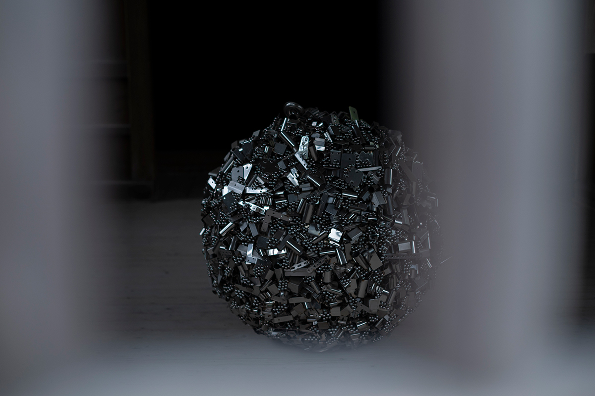
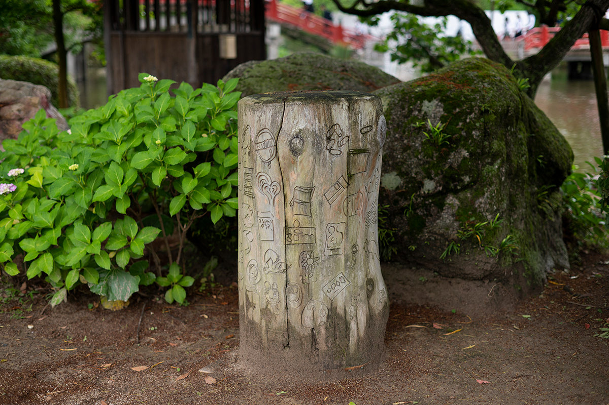
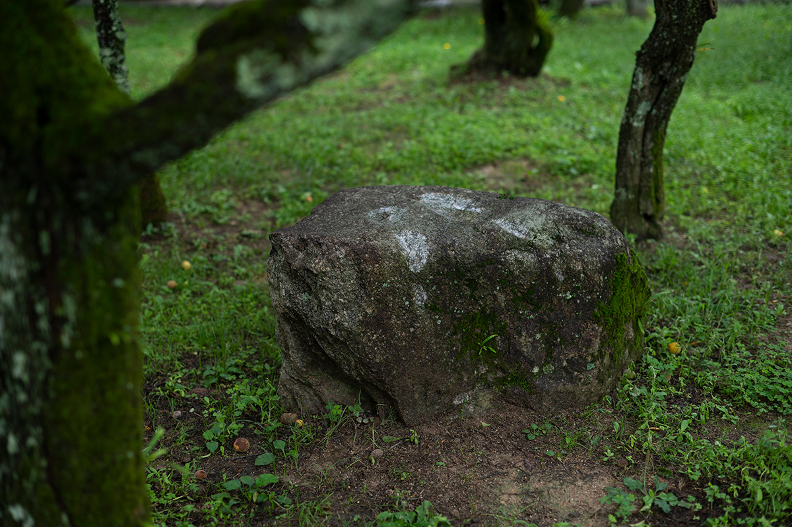
У входа работает информационный центр. Здесь продают сувениры, например футляр для книжки печатей госюин, который сделали вместе старая обувная фирма и производитель канцелярии из Фукуоки. Звук в зале создал NF, проект Итиро Ямагути из группы Sakanaction.
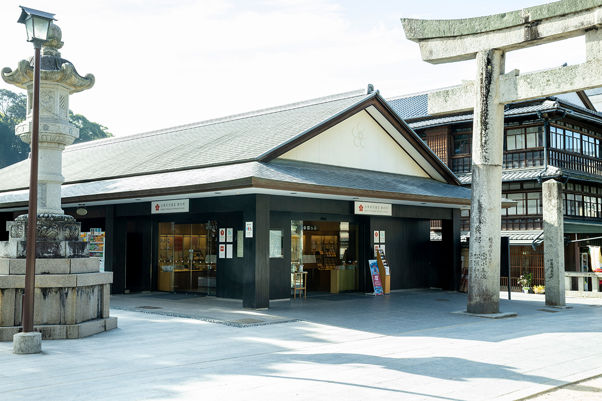
Где увидеть
Митидзанэ Сугавара в Дадзайфу
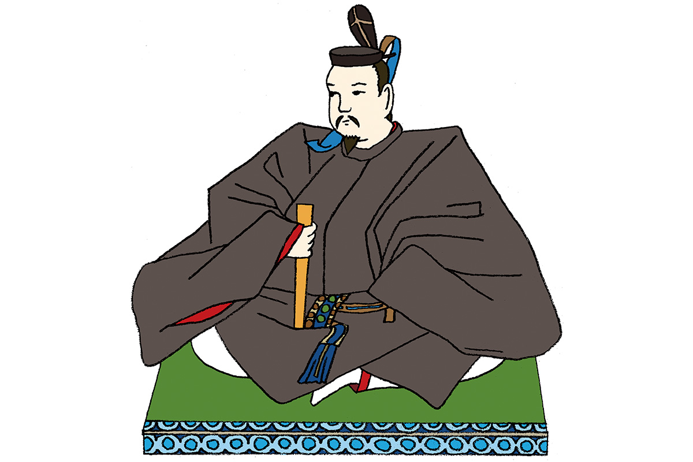
- Главный зал святилища Дадзайфу Тэммангу. Стоит над могилой Митидзанэ. Зал 1591 года после реставрации 2023–2026 годов снова открыт.
- Слива Тобиумэ. Священное дерево святилища, по легенде за одну ночь прилетевшее из Киото в Дадзайфу.
- Сокровищница святилища. Живопись, документы и сокровища, которые веками дарили Тэндзину.
- Зал Эма-до. Таблички и картины с пожеланиями, от эпохи Эдо до наших дней.
- Святилище Эноки-ся. Стоит на месте южной резиденции правительства, где Митидзанэ умер в 903 году.
- 25-е число каждого месяца. День, связанный с рождением и смертью Митидзанэ: в святилище проходит ежемесячная церемония.
- Национальный музей Кюсю. Открыт в Дадзайфу в 2005 году. О таком музее в Дадзайфу мечтали с XIX века.
Святилище Дадзайфу Тэммангу
- Адрес
- префектура Фукуока, Дадзайфу, Сайфу, 4-7-1
- Телефон
- +81 92-922-8225
- Часы работы
- 6:30–19:00; с дня весеннего равноденствия до дня перед осенним равноденствием с 6:00; в июне–августе до 19:30; в декабре–марте до 18:30
- Цены / Вход
- вход на территорию свободный
Фото: Хироси Мидзусаки, Кадзуаки Коганэмару, Ясуси Итикава.